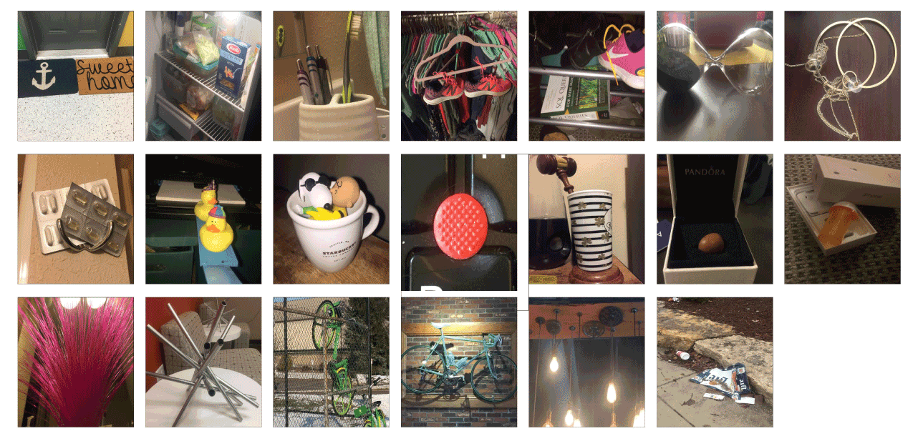
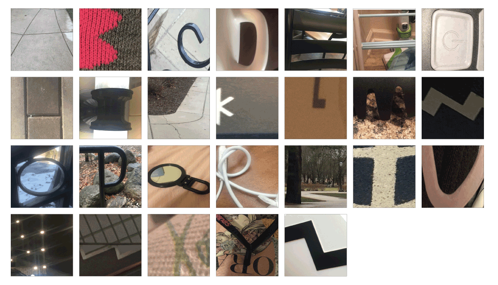

The Project
This project was the first of many in my journey through my concentration in visual interface design. The purpose of this project was to see everyday objects through a new perspective. We started by finding objects that seemed out of place, then took it a step further by finding the alphabet within those objects, and, lastly, chose one of these objects to make an alphabet out of. The process you will see below looks at each of those steps and how it, ultimately, got me to where the project ended.
The Process

01
Everyday Objects in Not-So-Obvious Places
02
The Alphabet Around Us: Take 1

03
The Alphabet Around Us: Take 2
04
Building My Alphabet
05
A to Z: Completed Alphabet